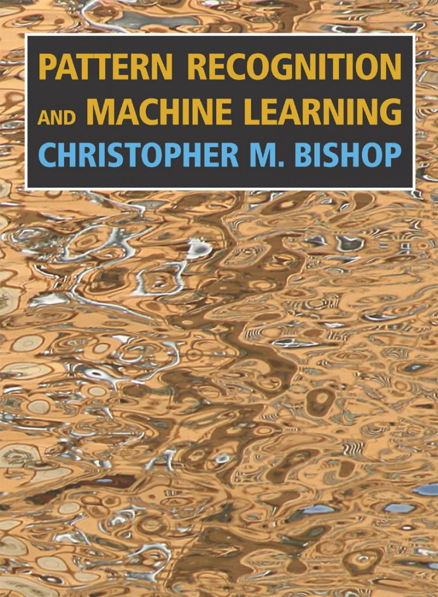
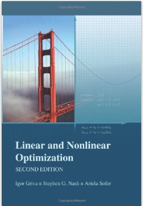
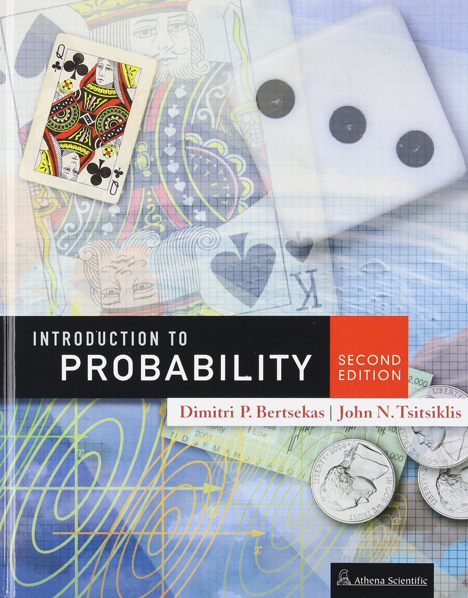
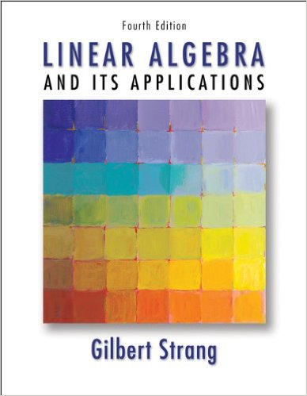

Handy References:
-The Matrix Cookbook (All you need to refresh your Matrix Calculus!)
-Introduction to Conjugate Gradient Method w/o the Agonizing Pain
-Cool LaTeX symbol classifier tool
-Miscellaneous cheat sheets for quick refs [Unix] [Git] [Python]
Some interesting blogs for data mining/machine learning:
-Edwin Chen's Blog
-John Langford's Blog
-FastML
-Walking Randomly
-Nuit Blanche
-I'm a bandit
Random:
-"Your algorithm can't resist the plague of overfitting!" :) Overfitting Thriller!
-The famous and amazingly well written - PhD Grind by Philip J. Guo
- Milos Shokouhi from MSR Cambridge gave a wonderful talk on how to get the most out of your PhD (titled: Recipes for PhD), Slides
-Statistics
of acceptance rates of main AI conferences
Recommended Books:
| "Pattern Recognition and Machine Learning" - By Christopher M Bishop: Although vast, it covers pretty much every basic topic that one could possibly imagine in this area. The author follows a Bayesian approach to most methods with some frequentist treatment at places. With a considerable background in linear algebra, multivariate calculus and probability, this book will deliver a lot. To sum it up, I consider this book as a good rigorous graduate level introduction to machine learning! |  |
| "Linear and Nonlinear Optimization" - By Igor Griva, Stephen G Nash, Ariela Sofer: Great introductory book on Optimization Methods. The book is semi-rigorous primarily focussing on delivering the intuition behind various methods rather than introducing terminologies right away! Very easy to read and follow. Probably, a pre-cursor to Nocedal&Wright in my opinion. |  |
| "Introduction to Probability" - By Dimitri P. Bertsekas, John N. Tsitsiklis: This is a great introductory textbook for probability. Dimitri is a wonderful teacher and his video lectures are a great accompaniment to this textbook. |  |
| "Linear Algebra and its Applications" - By Gilbert Strang: It would not be incorrect to say that anyone who has learnt linear algebra has been influenced by Gilber Strang's material in some way or the other. His explanations are so perfect that it is hard not to get the concepts! Strongly recommend watching his video lectures (freely available online) as well. |  |